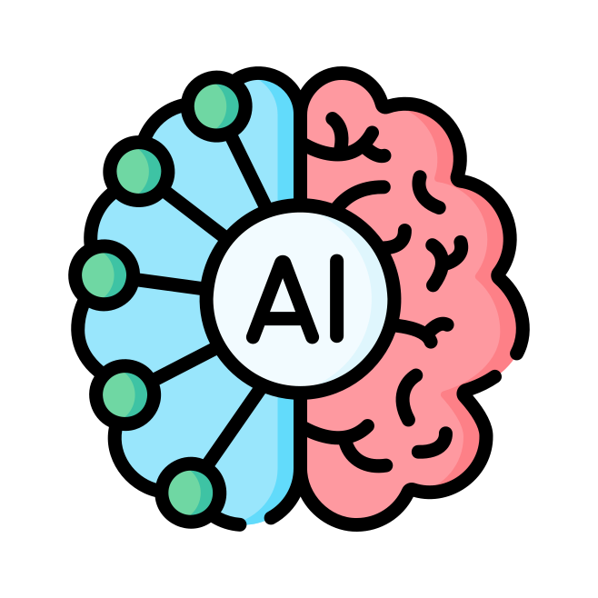

AI/LLM Systems Research
Independent
Toronto, Canada
- Built multi-agent systems using LangChain, LangGraph, and custom frameworks, integrating OpenAI, Anthropic, and local models for workflow automation and autonomous task completion.
- Engineered RAG pipelines with vector databases for enhanced context retrieval and response accuracy.
- Developed a custom agent orchestration framework exploring cognitive architecture and observability patterns for reliable, long-running LLM agents.
- Built an AI-powered digital twin to autonomously handle external communications and tasks.
Python
Go
LLM
RAG
Agents
LangGraph
OpenAI
Anthropic